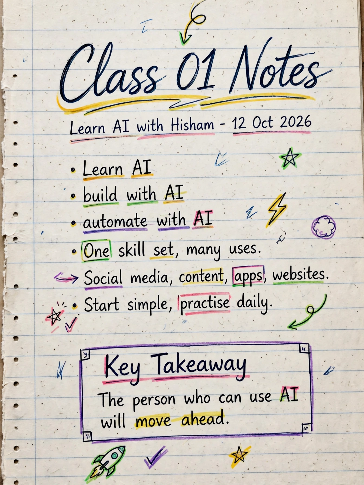

01 / 04
Short, clear notes from 12 classes. Start at Class 1, go one class at a time, and learn what you can do with Claude, in plain words.
New to AI? Start at Class 1 and go in order. Or pick what you want to do, and we will take you to the right class.
Start at Class 1 and go in order. Each class builds on the one before it.

Tap the page to open it full size. Use Next page to move on.
Four clear notebook pages per class. Read one page at a time.
Watch the full class on Facebook whenever you want the full explanation.
These are short summaries in plain words, not the full word-for-word class.
The full class words are written by a computer and have not been edited, so some parts may read roughly.
Hard words from the classes, explained simply. The notes themselves have not changed.